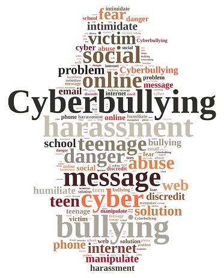

By Rafi
Cyberbullying is the use of technology that people use to send hateful comments and threatnen other people online and harrass them with negativity
Bullying can happen anywhere, to anyone—school, work, at home. Sure, we all know the stereotype of the playground bully pining to steal your lunch money, or the gossip girl ready to spread an ugly rumor. But, the truth is that bullying happens every day in both obvious and subtle ways that are a far cry from the Regina George rumor mill. If you are experiencing bullying, know that you are not alone. Although it’s hard to know exactly how many people have experienced bullying, most estimates indicate that the vast majority of people experience bullying at some point.It’s a serious problem that can be detrimental for self-confidence and can significantly impact one’s ability to feel safe, do their best work, and take care of themselves.
public domain
Hurting or trying to hurt someone's body by fighting and being very violent.
Saying hurtful things that can hurt someones feelings by teasing and sending threats
Ruining someones reputation or relationship with others by spreading rumors

public domain
What is CyberBullying? Ways to prevent Cyberbullying Types of Bullying